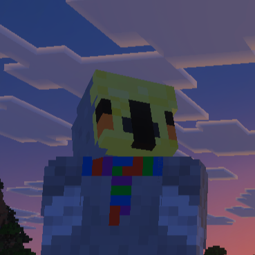

Loading...
Home Downloads YouTube AboutThis is a page for everyone who plays any repeating role in the development of Minecraft Addons for PESKYBIRD2573.

The guy behind it all. Pesky Bird got his name watching Hermitcraft, and since then, it just stuck. A lifelong fan of Science Fiction, and regular Science brings him to Doctor Who. This plus his love of Computer Science and Minecraft ment a Doctor Who addon was only inevitable.